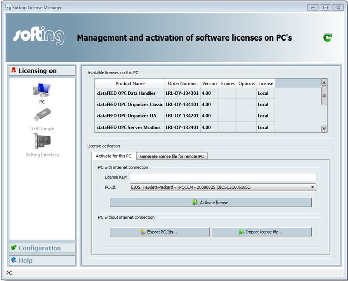
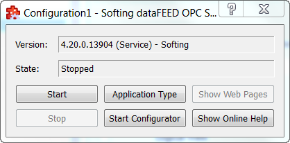
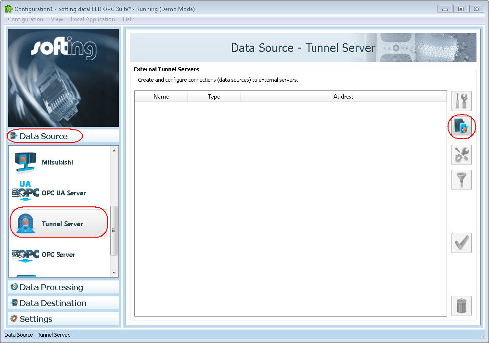
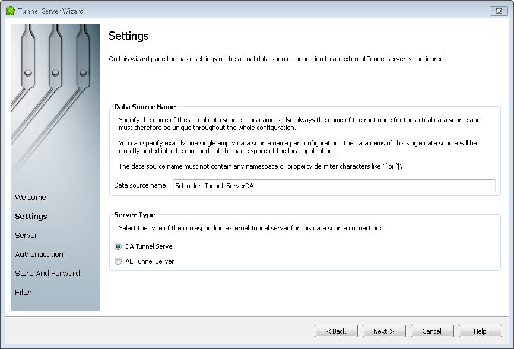
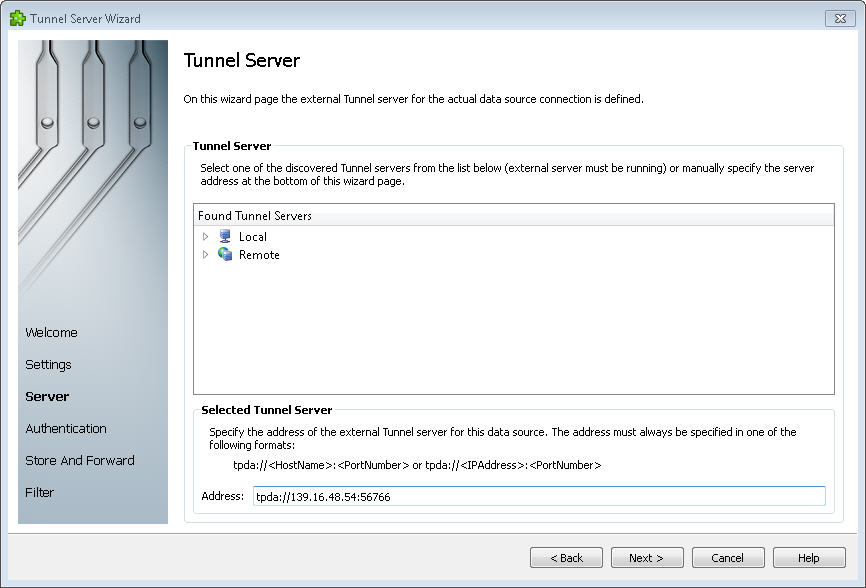
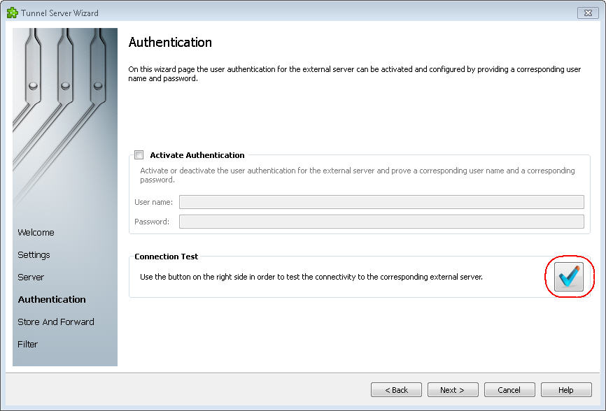
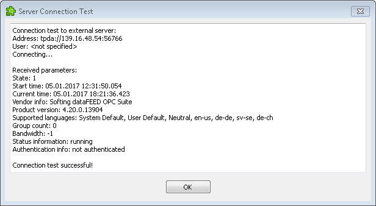
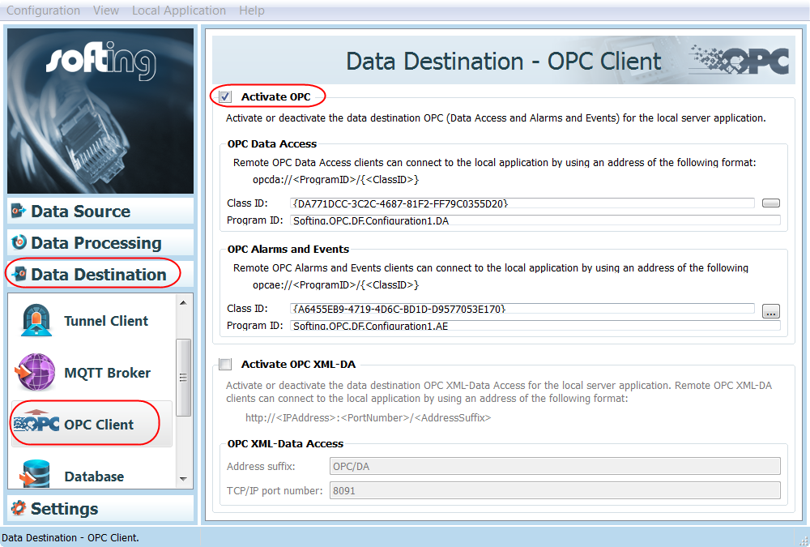

Connect to the Schindler Server
The workflow can be performed independent of Desigo CC engineering, but must take place prior to creating the Schindler export file.
We recommend consulting with a Schindler service technician on the installation.

NOTE:
The OPC tunneller must be installed when the Schindler server is not on the same computer as the Desigo CC server.
- The OPC installation and OPC configuration is completed on the Schindler server.
- The Schindler server is not on the same computer as the Desigo CC server.
- The following information must be available for the OPC client installation:
−Schindler server IP address with port number, for example, 139.16.48.54:56766
− Data source name, for example, Schindler_Tunnel_ServerDA
- In Windows explorer, select the file dataFEEDOPCSuite_V_xxx.exe on your installation media.
- Right-click and select Run as Administrator.
- Select the language.
- Click Next to continue.
- Accept the terms of the License Agreement and click Next.
- Click Next and then Install.
- Click Finish.
- The OPC suite is installed and the license manager opens.
- The tunnel symbol
 displays on the status bar.
displays on the status bar. - Select the Schindler client license.

- Close the license manager.
- Right-click the tunnel symbol on the status bar and select Open Softing.
- The configuration window opens.

- Click Start.
- The tunnel symbol
 changes on the toolbar.
changes on the toolbar. - Click Start Configurator.
- The installation wizard opens.
- In the Data Source pane, select Tunnel Server.
a. Click Add a new data source.
b. Click Next.
- The Settings window opens.
- Do the following:
a. In the Data source name field, enter the default name Schindler_Tunnel_ServerDA.
b. Select DA Tunnel Server.
c. Click Next.
- Do the following:
a. In the Address field, enter the IP address and port, for example, 139.16.48.54:56766.
b. Click Next.
- Do the following:
a. Click Connection test.
b. If properly connected, click OK.
c. Click Next. - Click Next, Next and then Finish.
- The OPC connection is installed.
- In the Data Destination pane, select OPC Client (but not the OPC UA Client).
a. Select Activate OPC.
b. Enter a name in the Program ID field.
- The OPC installation is completed. Now create the Schindler export file.